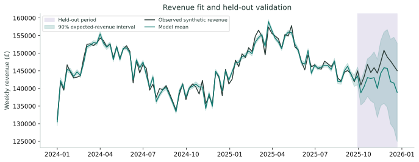
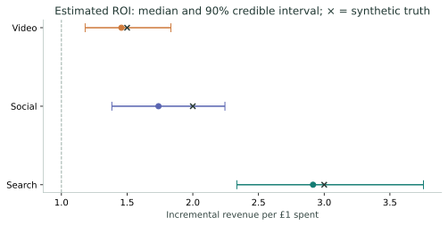
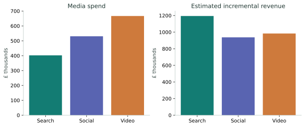
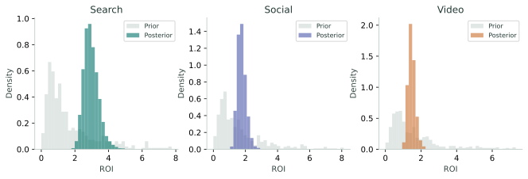
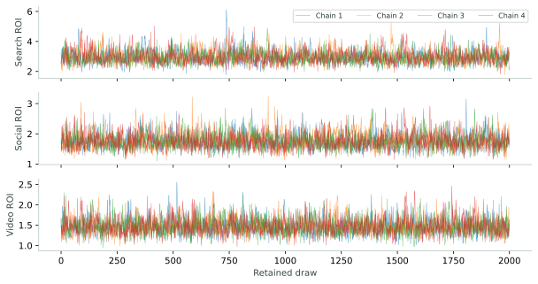
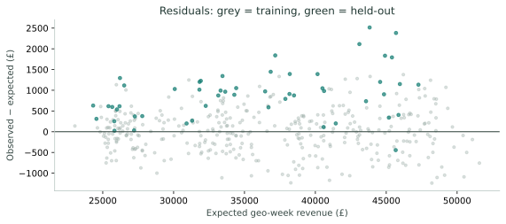

Evidence before allocation.
The fitted model estimates the incremental revenue associated with Search, Social and Video, after accounting for demand, price, regional differences and a smooth time baseline. Every estimate below comes from a real Google Meridian posterior fit.
The sampler meets the stated convergence thresholds. Held-out error is 2.5%, versus 1.1% in training.
Does the model explain revenue?
The last 13 weeks in each region are excluded from KPI fitting. Media and controls remain available during validation; this is conditional validation, not a forecast of unknown future inputs.

| Evaluation split | Observations | MAPE | RMSE | R² |
|---|---|---|---|---|
| Training | 364 | 1.13% | £520 | 0.995 |
| Held-out | 52 | 2.47% | £1083 | 0.979 |
Return, with uncertainty attached.
ROI is incremental revenue divided by media spend, measured against a zero-media counterfactual for each channel. It is revenue ROI, not profit ROI. Intervals show the 5th to 95th posterior percentiles.

| Channel | Spend | Median ROI | 90% interval | Synthetic truth | Truth inside interval? |
|---|---|---|---|---|---|
| Search | £402,283 | 2.92× | 2.34–3.76× | 3.00× | Yes |
| Social | £530,365 | 1.74× | 1.38–2.24× | 2.00× | Yes |
| Video | £666,800 | 1.46× | 1.18–1.83× | 1.50× | Yes |

Recommended next step
Use these results to design channel experiments, not an automatic budget shift. Average historical ROI does not establish marginal ROI. This demo does not claim to find an optimal allocation.
A completed fit must earn trust.
Convergence checks passedR-hat compares chains; effective sample size measures usable information after accounting for correlation between draws. Passing these checks does not prove causal validity or remove model bias.

Inspect chain traces and residuals


Designed to be reproducible.
Data generation
104 Mondays from January 2024; four fictional regions; independently varied Search, Social and Video spend. Revenue combines baseline demand, price, trend, geometric media carryover, Hill saturation and Gaussian noise. Currency is illustrative GBP.
Model specification
Google Meridian 2.0.0, JAX backend; regional model with eight time knots and a six-week maximum lag. Default Meridian ROI priors; 4 chains, 1500 adaptation steps, 500 burn-in steps and 2000 retained draws per chain. Target acceptance 0.99, maximum tree depth 12. Seed 20260922.
Scope of evidence
The data deliberately omit the confounding, missingness, changing prices of media, measurement error and business shocks common in real marketing data. Ground-truth recovery on one simulation does not establish general accuracy. There is no experimental calibration, alternative-prior refit, budget optimization or profit model.
Validation boundaries
The held-out window tests conditional revenue estimation within the modeled calendar. ROI uses all-period spend and exposures; held-out KPI is excluded from the likelihood. The final time baseline may be weakly identified. Revenue intervals describe parameter uncertainty only.
Reference: Google Meridian user guide · Official end-to-end example
Take the numbers with you.
Reproducibility fingerprint
Input SHA-256: 91a202d3c3840abb92c1065f01fc1ecccbe9e5909c21b9b432c5ca1ea767da42
Posterior sampling time: 127.15 seconds. Generated at 2026-09-22T18:29:55.693502+00:00. Exact numerical results can vary across hardware and dependency versions; the repository includes the fitted run's dependency snapshot.